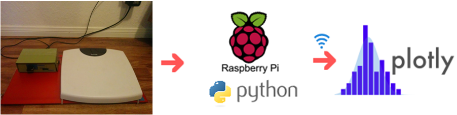
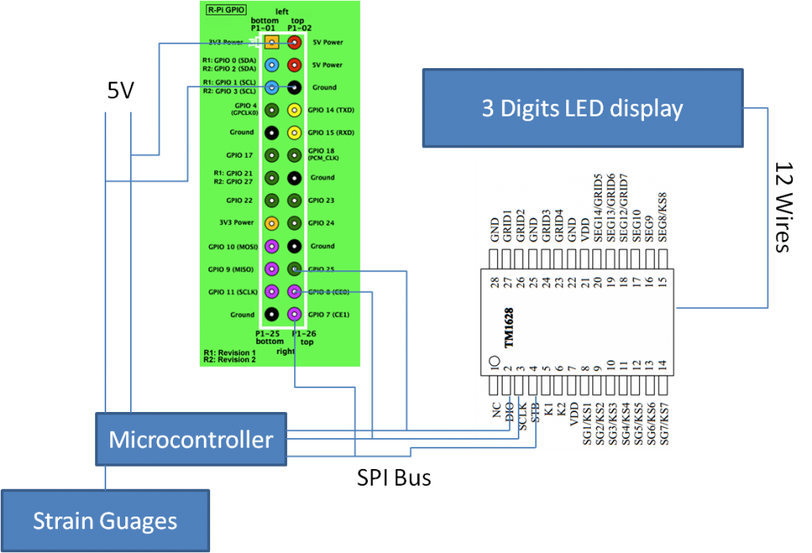
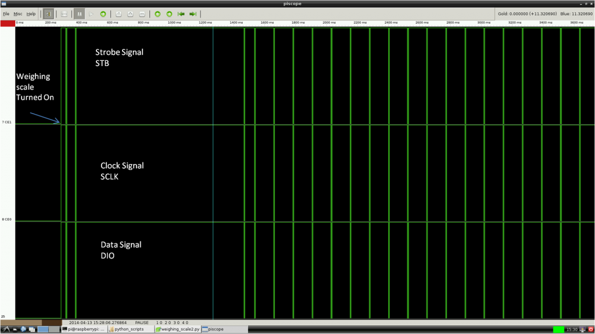
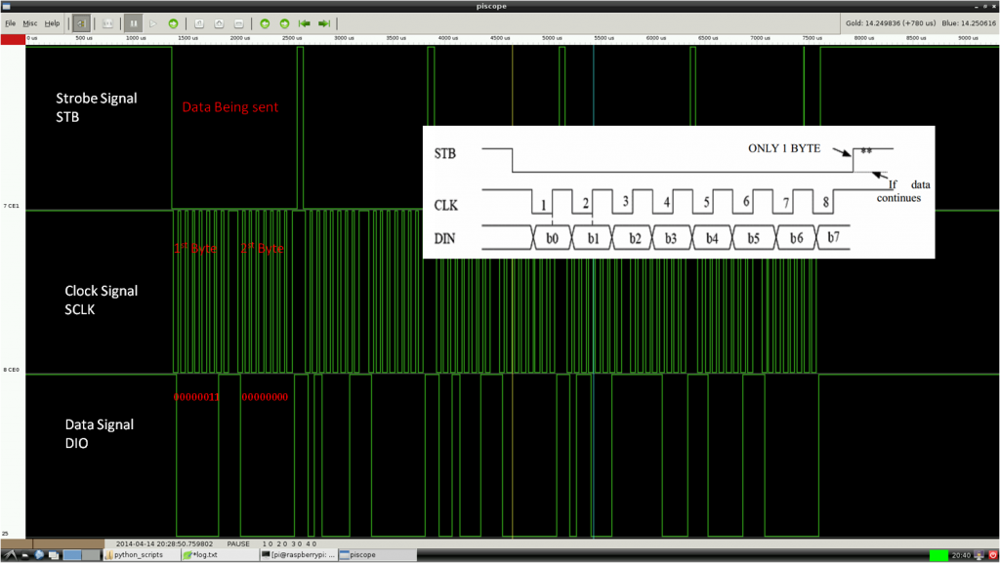
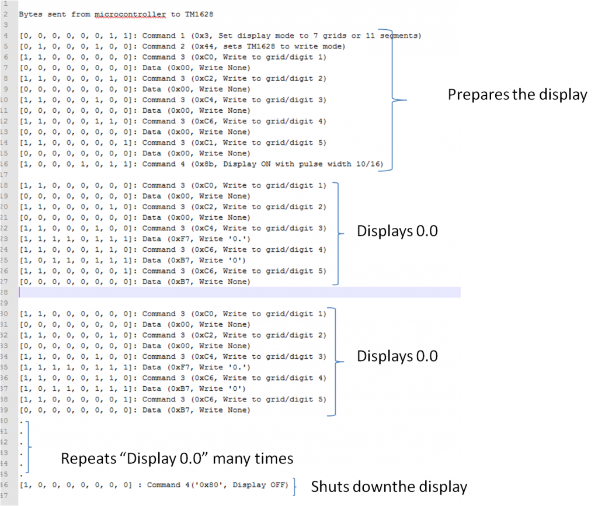
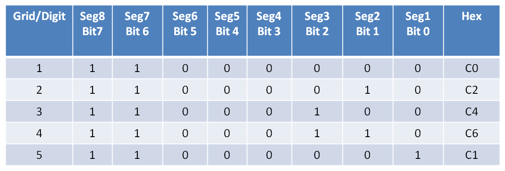
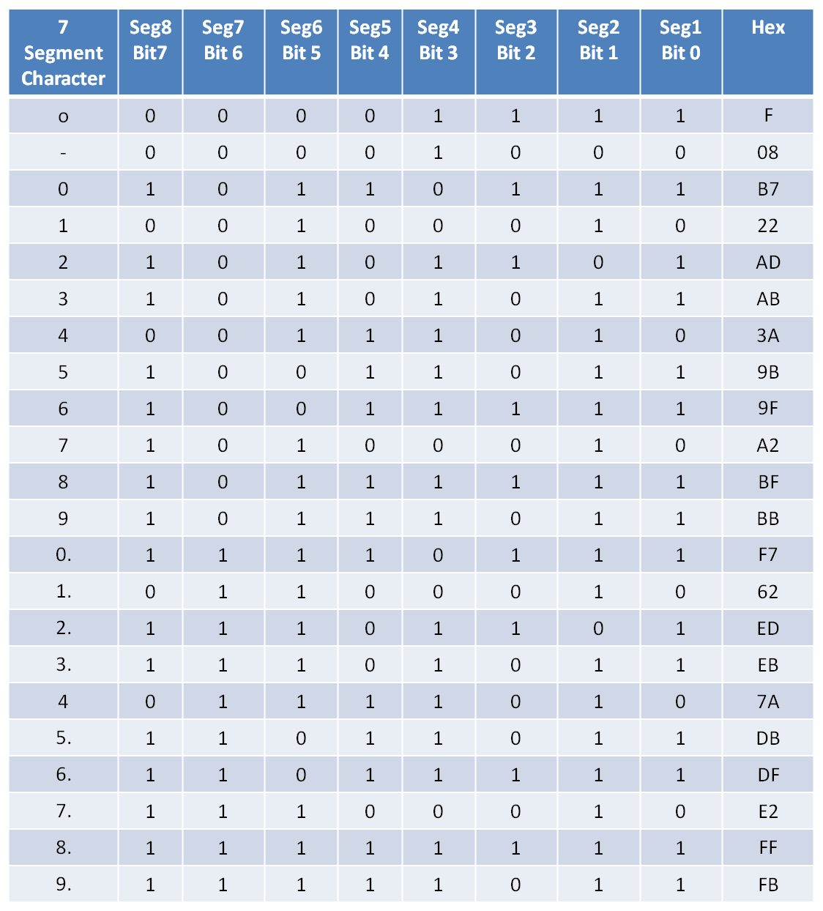
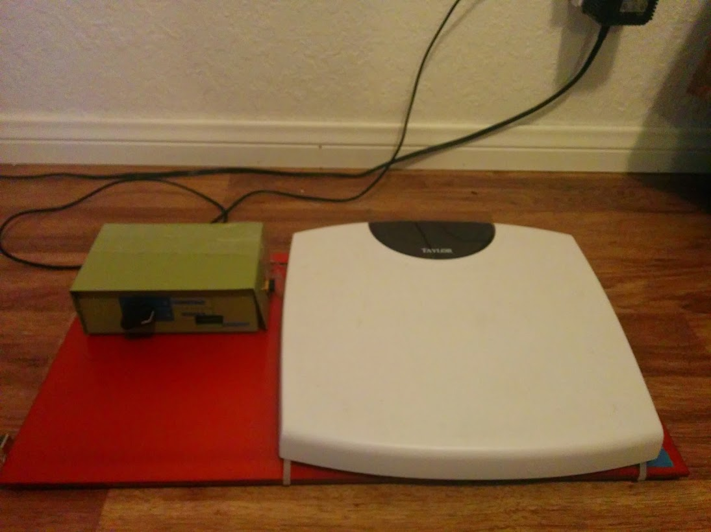
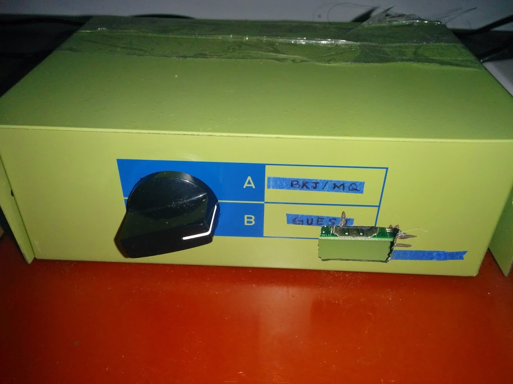
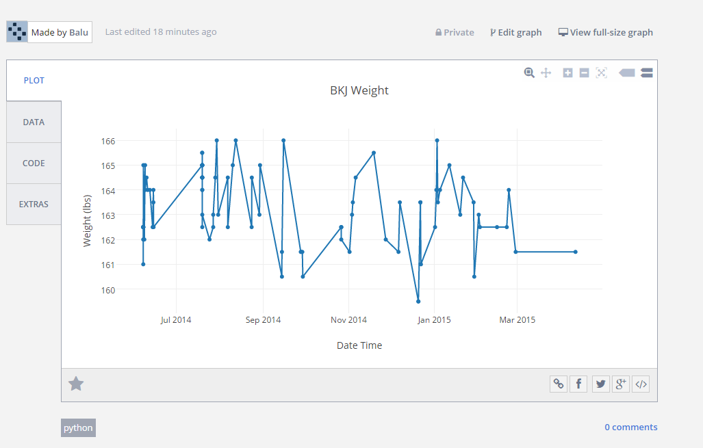

Hacking Weighing Scale to Upload Weight to Plotly using Raspberry Pi
Posted on Sat 11 April 2015 in Electronics

I have been interested in monitoring and keep track of my weight. In the past, I have used different phone apps to track my weight. They work reasonably well, but I was thinking of reading weight data directly from my weighing scale and upload the data to an online database.
It meant that I needed a micro-controller connect to my house WIFI connection and upload that data to somewhere in the cloud. I have seen some projects online that use an arduino for this purpose. They use arduino to serially send information to computer. The information on the computer can be potentially sent to an online database. One could also upload data directly from arduino to internet using a wifi shield, but this makes it more expensive. I was therefore more inclined towards Raspberry pi because it connects to wifi easily and can read data from weighing scale. I was also inclined in programming in python on raspberry pi rather than C, which I am not very proficient.
Choice of weighing scale
I looked around some projects online and found a weighing scale that seemed easy to get data from by reading the LED signals. I bought the same model for around 20 bucks at my local target. The first thing I noticed after opening this scale was that it did not look similar to what was described at fivevolt blog. I did not see the four transistors and HC164 of which the author talks about in his blog. May be the manufacturer changed the design or they have different versions of it. I was disappointed.
The PCB on the weighing scale had a epoxy covered region, which I presume is the microcontroller and it is connected to a big chip on the board. I looked at the name of the big chip on the pcb board and I can barely read TM1628. A simple google search revealed that it was an LED controller for the led display. The led display has four grids (digits). Each of this digit is a 8 segment display. TM1628 controls which grids and segments were to be lit or not (HI or LOW). So I can see 12 wires going from LED controller to LED display (four for controlling each grid and eight for the 7 segment display of each grid). I could figure out which wires correspond to which grid and which segment and tried to solder wires. But that meant I have to read 12 digital signals (Hi or Low) using raspberry pi GPIO. This also looks very ugly too. So I decided to take a different route instead.
Understanding how data was being processed inside
A close inspection revealed that the microcontroller onboard was sending instructions to TM1628 using SPI protocol. So I intercepted these SPI specific voltage pulses (3.3V) using Raspberry Pi as shown in figure below.
SPI bus consists of master and slave and has four lines in between them, which are MOSI, MISO, SCLK and SS (for more information see here. In this case, the TM1628 is the slave and the microcontroller on board is the master. The slave does not send any data to the microcontroller so there is no MISO line. SCLK is the clock signal. MOSI and SS line are referred as DIO and STB respectively in the TM1628 manual.
Schematic of the hacked weighing scale

After intercepting the STB, SCLK and DIO with raspberry pi as shown in the above figure (used bitscope package to read these signals). A typical pattern looks like this:

Each green line in the DIO contains data that is synced to STB and SCLK. When I zoom on the each green line I see the following:

Bits of data are being sent out in the DIO line at the rising edge of the clock signal.To decode these bytes.
When I just step on the weighing scale and get down, weighing scale displayed “0.0” for some time and then the display turns off. I was able to get the bytes for this action and start to decode according to the TM1628 manual. Below are the bytes being sent and the decoded information for the action of just stepping on and stepping of the weighing scale.
The order in which bytes are sent is shown below: 
Command 1 and command 2 prepare the display. Command 3 helps in preparing the grid/digit. It can be seen from the above figure, once a grid is prepared, a character is being written to that grid/digit. This process starts from the first grid and ends at the fifth grid. This cycle repeats many times. The cycle repeats so fast that we think the display is not changing. I used the following cheat sheets for decoding the above data bytes.
Following table is for command 3 where a certain grid/digit has to being chosen.

Following table shows the bytes for displaying a certain character on a certain grid/digit.

Code to capture the data
Once I understood the commands being sent and how to interpret them, I wrote a python code that uses PIGPIO to read these commands.
I also added the capability to select a user with a rotary switch and assign weight information. A user can be guest, myself or my wife.
Weight information is written to a file locally and also uploads the information to plotly for visualization.
Final product
 
Below is the youtube video of how the program works (without plotly integration)
Below is the plotly image showing the weight data collected over a year. I am still overweight.
